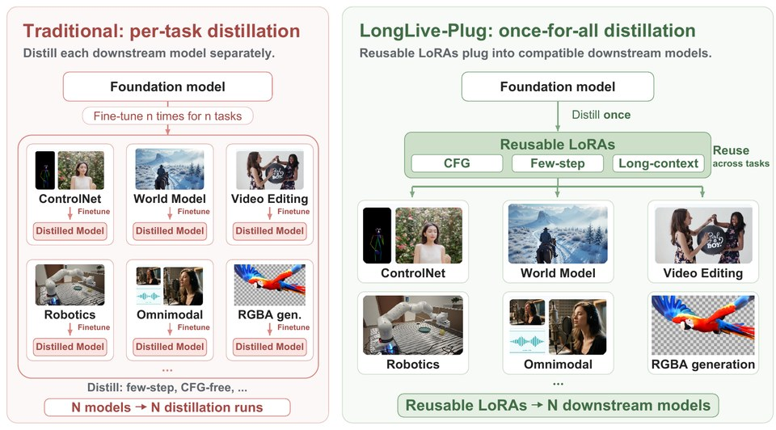
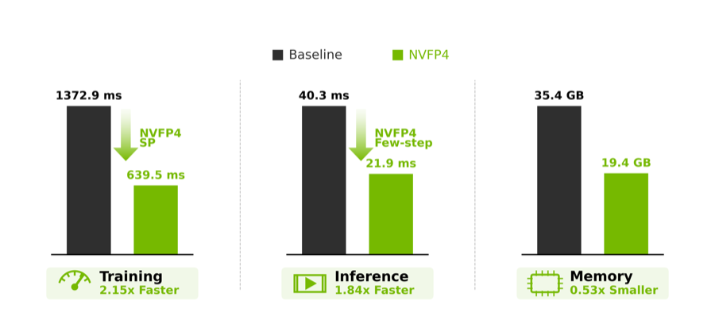
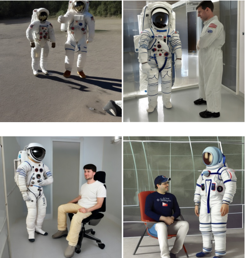
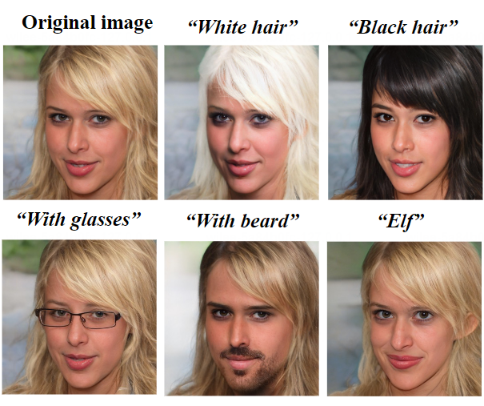

I am a fourth-year PhD student in Artificial Intelligence at HKUST(GZ), advised by Prof. Ying-Cong Chen. I work on controllable and efficient generative models, with a recent focus on long-video generation infrastructure. I am also collaborating closely with Yukang Chen on efficient training and inference systems for video generation.
My research interests center on controllable visual generation, video customization, transparent RGBA video generation, video world models, and practical systems for efficient long-video model training and deployment.
News
-
We released LongLive-Plug, a once-for-all distillation framework that learns CFG, few-step, and long-context capabilities as reusable LoRAs and plugs them into 54 downstream video models without target training.
-
We released ReWorld, a real-time interactive world model with long-horizon memory that keeps revisited places consistent over minute-long rollouts.
-
We released LongLive 2.0, an open-source NVFP4 parallel infrastructure for long-video generation, covering AR training, few-step distillation, multi-shot training and inference, SP acceleration, NVFP4 KV cache, and asynchronous VAE decoding.
-
We released the survey A Mechanistic View on Video Generation as World Models: State and Dynamics and its companion repository.
Earlier news
-
Scene Graph Guided Generation, which introduces the Scene Graph Adapter, was accepted to ICCV 2025.
-
The transparent video generation technology behind TransPixeler has been transferred into Adobe Firefly, enabling transparent-background video generation with foreground and alpha video exports.
-
TransPixeler was accepted to CVPR 2025.
-
Motion Inversion was accepted to SIGGRAPH 2025.
-
Text-Anchored Score Composition was accepted to ECCV 2024.
-
Selective Diffusion Distillation was accepted to ICCV 2023.
Selected publications
* equal contribution
-

LongLive-Plug: Once-for-All Distillation for Video Generation
arXiv 2026 New
Distills CFG, few-step sampling, and long-context error correction once into reusable LoRAs that plug into compatible downstream video models without target training, verified on 54 downstream models.
-
ReWorld: An Interactive World Model with Long-Horizon Memory
arXiv 2026 New
A real-time interactive world model that follows camera actions and remembers revisited places: a fixed-size KV cache with pose-indexed landmark memory keeps minute-long rollouts consistent at 704×1280.
-

LongLive-2.0: An NVFP4 Parallel Infrastructure for Long Video Generation
arXiv 2026
A 4-bit long-video generation infrastructure built around NVFP4 and parallelism, supporting the full path from training to deployment and reaching 45.7 FPS on LongLive-2.0-5B.
-
State
Dynamics
A Mechanistic View on Video Generation as World Models: State and Dynamics
arXiv 2026
A survey that frames video generation as world modeling through state construction and dynamics modeling.
-
TransPixeler: Advancing Text-to-Video Generation with Transparency
CVPR 2025
The transparent-background video generation technology behind this work has been transferred into Adobe Firefly, where creators can generate foreground videos with alpha-video exports for compositing.
-
-

Scene Graph Guided Generation: Enable Accurate Relations Generation in Text-to-Image Models via Textural Rectification
ICCV 2025
Introduces the Scene Graph Adapter, formerly SG-Adapter, to improve relation control in text-to-image generation.
-

Experience
-
NVIDIA Research
2026 – presentResearch intern with Yukang Chen on long-video generation infrastructure: LongLive-2.0 and LongLive-Plug.
-
Kuaishou Technology, K-Star program
2025 – 2026Research intern with Xin Tao on memory mechanisms for long-video generation.
-
Adobe Research
2024Research intern with Yijun Li on RGBA video generation (TransPixeler, CVPR 2025), transferred into Adobe Firefly.
-
Kuaishou Technology
2023 – 2024Research intern with Xin Tao on scene-graph-guided image generation (ICCV 2025) and Motion Inversion (SIGGRAPH 2025).